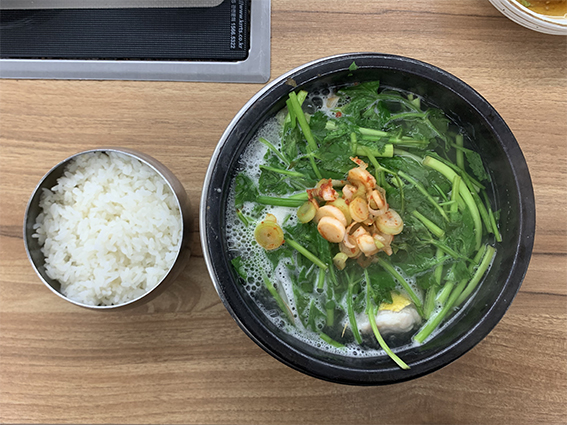

What is your favorite 3 course menu? Starter . Main course . Dessert
Usually I eat a meal consisting of Bab, Jjigae or dish, and banchan at the same time. Bab is a cooked rice. JJigae is a Korean stew. Banchan is side dishes
Choose 10 colors when you think of each country and tell us the reason. Why do you think these colors are related to Switzerland or Korea.
When I recall the memories in Basel and Lucerne, I remember warm gray. Buildings, bricks, earth, etc.
Which animal comes to mind when you think of Korea or Switzerland?
Switzerland reminds me of a neutral country, spectacular nature, peacful scenery. So a white pigeon, a symbol of peace comes to mind.
In the other hand, when it comes to Korea, gray pigeons come to mind. It is the most common bird in Seoul. It is generally considered unsanitary.
Which references in Korean design history and typography should we know?
Choi Jeong Ho’s Hangeul typeface, Jung Byung Kyu’s book design, An Sang-soo’s bogoseo\bogoseo
What is your favorite dish? (Recipes appreciated)
What music do you listen to or which musicians should we know from Korea?
I listen to K-pop. To me, music is more about both listening and watching.
The 4th generation idols that I often listen to are ITZY, aespa, TXT, and TRESAURE.
I also like songs from the early 2000s. It has very sad lyrics but the melody is very exciting.
Is there a difference between cultural and commercial poster display in Korea?
Recently, the experience of printed posters is rarer than on-screen.
Many posters related to culture and arts are seen on Instagram, but sometimes it is difficult to see printed posters even in the places where the event took place. Instead, there are banners.
Commercial posters also seem to be replaced by screen advertisements. In particular, bus stops and subway stations are full of promotional ads.
What is your favorite communication medium?
Recently, I am interested in websites as a medium. Compared to posters and books, the history of the website is relatively short, so wouldn't it be possible to do more experiments that have not yet been attempted in design?
We love Korean typefaces, what are your favorite type foundries?
What would you recommend to visit if we come to Korea?
Jeju island. It is located in the far south of Korea. Due to geographical differences, the natural scenery is different from other places in Korea. I recommend going to Mt. Halla. It’s the highest mountain in South Korea.
We get quite friendly with our clients and work closely with them. How is the relationship between designers and clients in Korea?
It depends. I often work related to culture and art, and the clients respect the professionalism and autonomy of designers to a large extent and accept experimental expressions relatively well.
Is teamwork common in the field of design Korea? And how do you divide your work in the team?
Team work is natural when there is a lot of work scope or a field that I can’t handle.
We try to support local printers and use environmentally friendly material and paper whenever possible. Is this also an issue for you?
A large portion of the population and many infrastructure are excessively in Seoul. It is a problem in terms of locality and diversity.
From what I remember reading in the book Entropy, eco-friendly is not really eco-friendly either. It is said that the greenest thing is not to produce.
Therefore, if production is inevitable, I think it is the best to produce valuable content and create a valuable format accordingly.